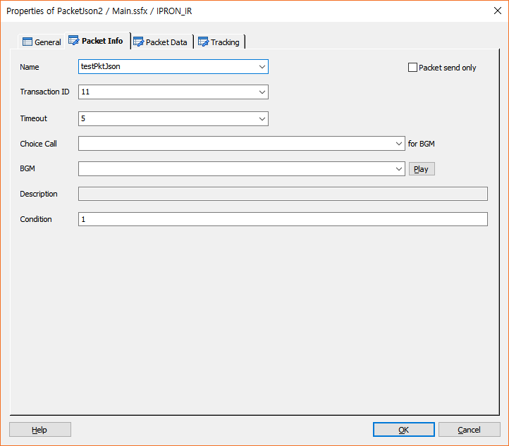
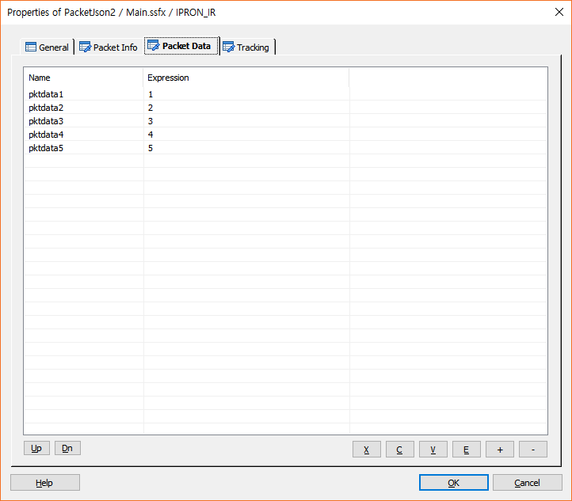
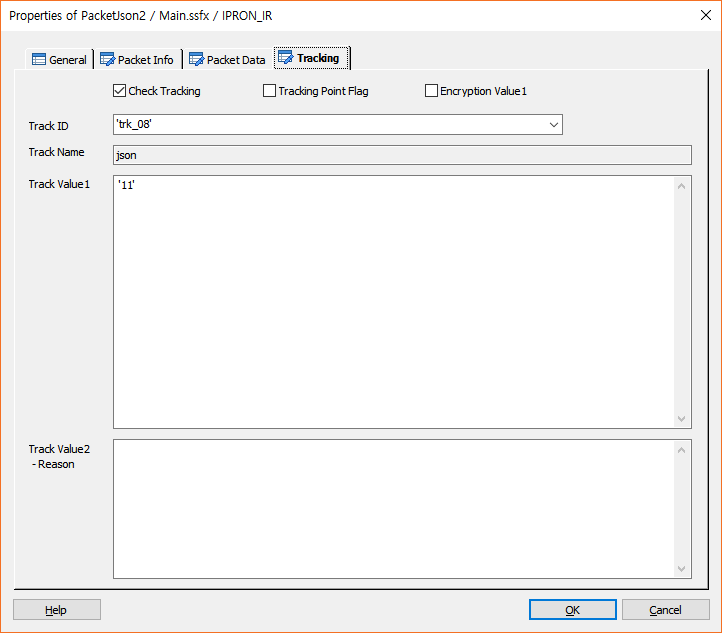

전문 정의 없이 Json 전문을 보내고 받는 아이템이다.
* ForCus v5.1 이상 지원
ICON

PROPERTIES
 Packet Info
Packet Info

Name : 아이템의 이름을 지정 합니다. 지정된 이름은 Packet 처리를 위한 변수에 접근 할 때 사용 합니다.
Packet send only Check Box : 전송 전용 전문을 보냅니다.
Transaction ID : TB 에서 전문을 전송할 대상(adapter/host)을 찾기 위한 서버 키 입니다.
Timeout : 전문 전송 시 대기 시간을 지정 합니다.(second 단위)
Choice Call(for BGM) : Multi Call 에서 콜을 선택 합니다.(2개 콜 까지 가능, GetChannel 로 생성)
BGM : 전문 전송 시 Delay 가 발생 할 수 있으므로 배경 음악을 지정 하여 전문 전송 중 재생 합니다.
Play Button : BGM에 설정된 멘트를 Play합니다.
Description : BGM 으로 지정된 멘트의 설명이 있으면 표시 합니다.
Condition : 아이템의 수행 조건을 지정 합니다.
 Packet Data
Packet Data

Json 전송 전문을 입력 합니다.
Up Button : 선택한 전문 필드를 위로 이동 합니다.
Dn Button : 선택한 전문 필드를 아래로 이동 합니다.
X Button : 선택한 리스트를 잘라냅니다.(Ctrl+X)
C Button : 선택한 리스트의 내용을 복사 합니다.(Ctrl+C)
V Button : 복사한 리스트의 내용을 붙여넣기 합니다.(Ctrl+V)
E Button : 선택한 전문 필드의 내용을 수정 합니다.
+ Button : 전문 필드 하나를 추가 합니다.(Packet Info Tab 의 Packet ID 에 지정한 정의된 전문에 포함된 필드)
- Button : 선택한 전문 필드를 삭제 합니다.
 Tracking
Tracking

전문 처리에 대한 트래킹을 처리합니다.
Check Tracking Check Box : Tracking을 사용 할 것인지를 체크합니다.
Tracking Point Flag Check Box : 특별한 Tracking Flag를 설정하여 SWAT에서 트래킹 시에 이 플래그가 설정된 항목만 트래킹 할 수 있습니다.
Encryption Value1 Check Box : Track Value1 속성 데이터에 대해서 암호화 처리를 합니다.
Track ID : 정의한 Track ID를 선택합니다.
- DefineTrack Item에 정의된 Track ID가 콤보박스 리스트로 제공됩니다.(Type이 없거나, Packet인 경우)
* 기본으로 Packet ID가 설정됩니다.
Track Name : Track ID를 선택하면 같이 정의된 이름을 출력합니다.(SWAT에서 이 이름으로 트랙킹 시에 사용합니다.)
Track Value1 : 트래킹 시에 사용할 값을 입력 합니다.
Track Value2 :트래킹 시에 사용할 값을 입력 합니다.(결과에 대한 Reason값)
RESULT
· 처리 결과 세션 변수
session.command.result : 처리 성공(_SLEE_SUCCESS_), 실패(_SLEE_FAILED_)
session.command.reason : 실패면 실패 오류코드(시스템 상수 참조)
· 아이템 속성 변수(@name은 Name항목에서 지정한 이름)
Json Packet 발신 및 수신 전문의 값 참조는 SLEE 환경변수의 PACKETJSON_RESULT_SET_FROM 설정(기본 설정 YES)에 따라 아래와 같습니다.
- PACKETJSON_RESULT_SET_FROM=NO, Asis 시나리오 호환 시 설정
@name.to.전문항목명 : 발신 전문의 값을 참조 하기 위한 변수, PacketJson 아이템 입력(발신) 항목
@name.전문항목명 : 수신 전문의 값을 참조 하기 위한 변수, 전문 수신 시 수신항목 생성
- PACKETJSON_RESULT_SET_FROM=YES
@name.to.전문항목명 : 발신 전문의 값을 참조 하기 위한 변수, 전문 발신 시 생성
@name.from.전문항목명 : 수신 전문의 값을 참조 하기 위한 변수, 전문 수신 시 생성
※ SLEE Cfg 경로 : /bridgetec/ipron/ir/cfg/irslee.cfg
RELATED